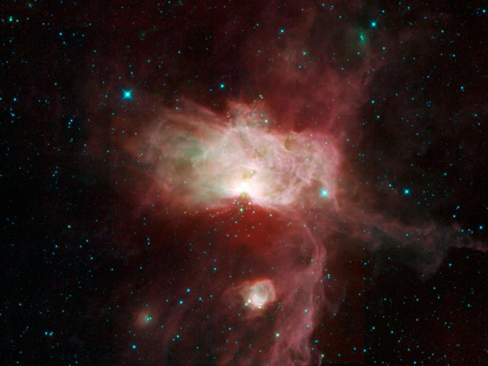

Forrige side
 Velkommen til del 3B! Vi skal i de følgende delene av kurset følge stjernenes livsløp. I denne delen starter vi med stjernenes fødsel. I den forbindelse trenger vi å bruke en viktig sammenheng for store systemer som kalles virialteoremet. Dette skal gi oss noen uttrykk som sier noe om en gass-sky vil kollapse under sin egen gravitasjon for å danne en stjerner eller ikke.
(Illustrasjon: En molekylsky i Orions belte, NASA/JPL-Caltech/UCLA) Neste side